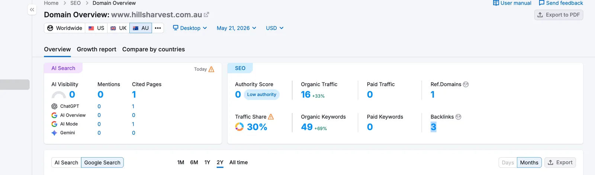

700+
Monthly organic visits, from 39 in May
202
Keywords ranking, from 145 in June
#1
Two priority delivery terms
10
Pages cited by AI assistants, from 1
7
Authority score, from 0

Objective
Hills Harvest delivers halal groceries and meat across Western Sydney. The site existed but was close to invisible in search, and Google was holding a large share of its pages out of the index entirely. The job was to get the catalogue indexed, then rank for the way people in each delivery suburb actually search: "halal delivery" plus a place name.
Strategy
- Fix indexation first. Search Console showed 98 pages crawled but not indexed and 54 discovered but not indexed, alongside 404s, redirect chains, canonical conflicts and robots.txt flags.
- Write the content Google was skipping: 107 product FAQs, plus descriptions and meta across 203 products.
- Build a location page for each delivery area rather than one page listing suburbs: the Hills Shire, Blacktown, Parramatta and Hawkesbury.
- Publish a blog programme, one target keyword per post, answering the questions the delivery buyer actually asks.
- Run organic social and a Facebook group campaign alongside the search work, so the profile a visitor checks next was not empty.
Execution
The indexation problem came first because nothing else pays off until it is solved. A page Google has decided not to index cannot rank no matter how good the content on it is, and roughly 150 pages were sitting in that state. Most of them were thin: product pages with a title, a price and nothing else. The FAQ work existed to give those pages a reason to be indexed rather than to please a keyword tool.
The location pages were the part that moved rankings fastest. "Halal delivery hills shire" reached #1 and held it. Hawkesbury went from #3 to #1 between June and July, and Blacktown moved from #29 to #5 in the same month. Parramatta and two non-geographic terms, "halal grocery delivery" and "same day halal meat delivery", entered at #5, #5 and #6 having previously not ranked at all.
Organic visits went from 39 in May to 473 in June, settled at 368 in July, and are now above 700 a month. The client also reports that sales rose over the same period.
What the numbers show
The jump from 39 to 473 in one month looks dramatic and mostly is not. A site starting from almost nothing produces enormous percentage moves from small absolute ones, and the first correct technical fixes on a neglected site tend to release a burst of traffic that was already available. The number worth watching is not the spike; it is the keyword count, which went from 49 in May to 145 in June to 202 in July. That is a base widening rather than a single page catching a wave.
Two #1 positions on suburb-level delivery terms matter more here than any traffic figure. Someone searching "halal delivery hawkesbury" has already decided what they want and where they live. That is a small search volume with an unusually high proportion of buyers in it, which is the correct thing for a delivery business to own.
What I'd flag
July went backwards. Traffic fell from 473 to 368, a 22% drop, after the June launch spike. Some of that is the spike itself unwinding, but a month-on-month fall is a fall and it belongs on this page.
The authority score is 7. That is up from 0, which is the right direction, but it is still a low-authority domain competing in a category with established grocers. Five live backlinks is not a link profile. The rankings so far come from relevance and from a market where few competitors have done the basics, not from earned authority, and that ceiling will show up as the terms get more competitive.
"Pages cited by AI" is a tool metric. It counts pages Semrush observed being referenced by AI assistants. It went from 1 to 10, which is a real signal worth tracking, but it is not a guarantee of ongoing citation and I would not build a forecast on it.
There is no sales figure on this page. The client reports that sales increased over the period. I have not published a number because I do not have the reporting to verify one, and an unverified revenue claim is exactly the kind of thing the rest of this site exists not to do.
The screenshot is the starting point, not the current state. The 21 May Semrush capture is the documented baseline. The June, July and current figures come from the monthly reporting on the account rather than from a screenshot published here.
Where these numbers come from
Every figure above is from the Semrush account and the monthly performance reports for www.hillsharvest.com.au, covering May to August 2026. Keyword positions are Google AU, desktop. The engagement is ongoing, so these numbers describe a project in progress rather than a finished one.
This is local SEO from a near-zero base. For the same work on an established site, see Pretty Party Platters.
Is your site being indexed at all?
If Google is holding pages out of its index, no amount of content fixes it. Send me the site and I will tell you what is actually being crawled and what I would fix first. No cost.
Get a free audit